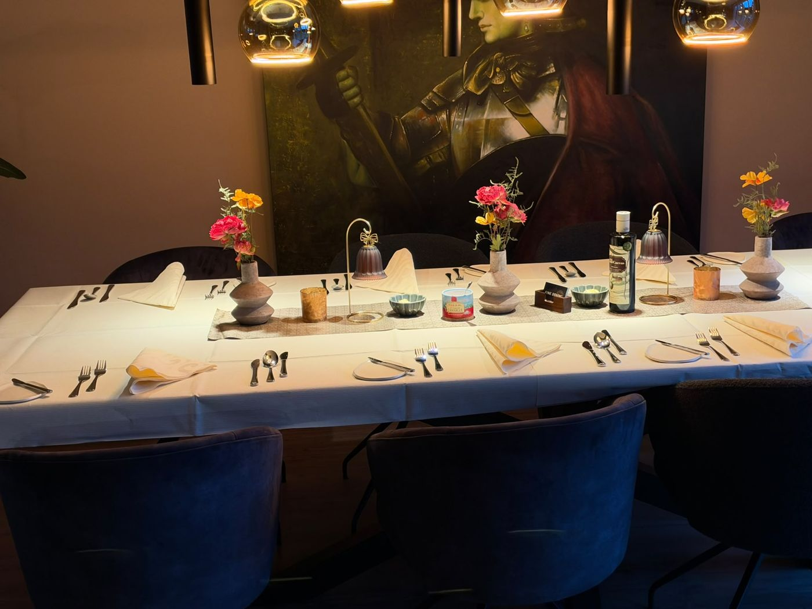
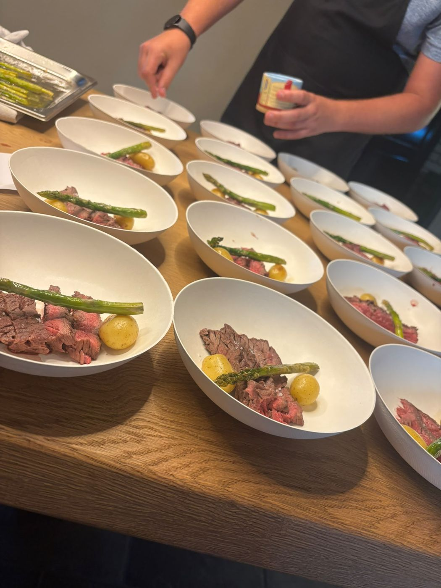
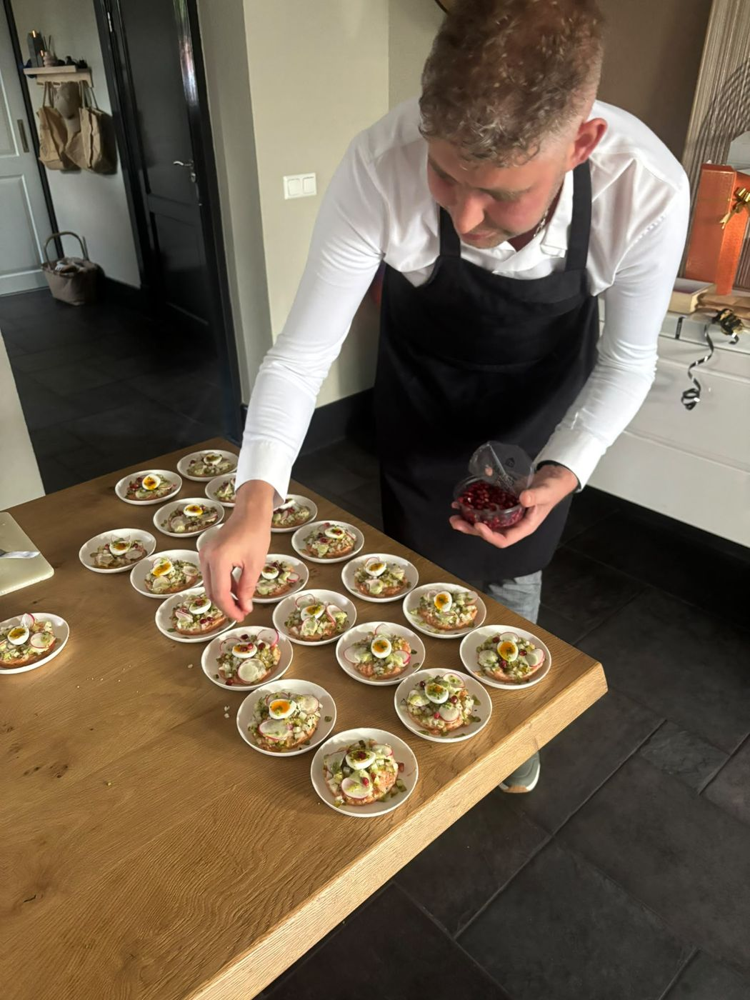
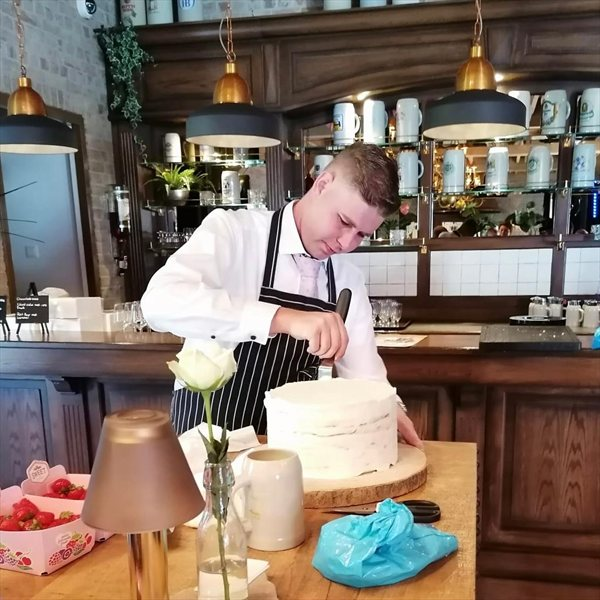

Private Dining
vanaf € 110 p.p.
Een meergangendiner aan uw eigen tafel. Timber kookt, serveert en vertelt bij elke gang het verhaal achter het gerecht — een intieme avond, volledig verzorgd.
Plan een avondTimber Nijland brengt de verfijning van een toprestaurant naar de vertrouwde omgeving van uw eigen huis — van een intiem diner voor vier tot een walking dinner voor veertig gasten, tot in het kleinste detail verzorgd.
De filosofie is eenvoudig: u hoeft zelf helemaal niets te doen. Zodra Timber uw keuken binnenstapt, transformeert deze in een volwaardig restaurant.
Niet alleen de ingrediënten reizen mee, maar ook het professionele servies, het tafellinnen en het bestek. Alles wat een restaurantervaring compleet maakt.
Bij elke gang treedt Timber op als gastheer en culinaire gids: het verhaal achter het gerecht, de herkomst van ingrediënten, de gedachte achter elke smaakcombinatie.
Na afloop wordt de keuken onberispelijk achtergelaten. Zo kan de gastheer of gastvrouw de hele avond volledig bij het gezelschap blijven.
Kies de vorm die past bij uw gezelschap en de gelegenheid. Bij beide arrangementen kiest u daarnaast het niveau van het menu.

vanaf € 110 p.p.
Een meergangendiner aan uw eigen tafel. Timber kookt, serveert en vertelt bij elke gang het verhaal achter het gerecht — een intieme avond, volledig verzorgd.
Plan een avond
vanaf € 75 p.p.
Een reeks verfijnde gerechten in kleinere porties, geserveerd terwijl uw gasten vrij rondlopen en met elkaar in gesprek gaan. Ideaal voor verjaardagen, feesten en grotere gezelschappen.
Vraag vrijblijvende offerte aanU laat via het formulier weten wat u zoekt: de gelegenheid, de gewenste datum en het aantal gasten.
Samen bespreken we smaakvoorkeuren, dieetwensen, allergieën en het karakter van de avond.
Timber arriveert met alle ingrediënten, servies en bestek, en transformeert uw keuken in een volwaardig restaurant.
U blijft de hele avond bij uw gezelschap. Na afloop wordt de keuken onberispelijk achtergelaten.

Naast onze exclusieve Private Dining- en Walking Dinner-arrangementen verzorgen wij graag de culinaire invulling van zakelijke bijeenkomsten.
Of het nu gaat om een bedrijfsfeest, personeelsdiner, zakelijke lunch, jubileum of een andere bijzondere gelegenheid: wij stemmen het menu en de opzet volledig af op uw gezelschap en uw wensen, zodat u zich kunt richten op uw gasten.
Vraag vrijblijvende offerte aan
Timber rolde al vroeg de keuken in en leerde het vak van onderaf: stap voor stap, jaar na jaar, in professionele keukens waar precisie en discipline de norm zijn. Die basis vormde hem tot de kok die hij nu is — iemand die weet dat goed koken begint bij geduld en aandacht voor detail.
Zijn hart ligt bij pure, eerlijke producten en het ambacht daarachter: de techniek, de sauzen, de balans tussen eenvoud en verfijning. Dat respect voor vakmanschap en kwaliteit wil hij op elk bord terugbrengen.
Het idee voor aan-huis dining ontstond niet vanuit een marketingplan, maar vanuit de coronaperiode. Toen restaurants dicht waren, ging Timber bij mensen thuis koken — en dat beviel. Hij zag hoe gasten er intenser van genoten dan in een restaurant, hoe een diner aan de eigen keukentafel het samenzijn juist versterkte in plaats van er alleen een uitje van te maken. Die ervaring is de kern van zijn concept geworden: heerlijk eten, maar vooral ook meer tijd en aandacht voor elkaar.
Wat hem daarbij onderscheidt, is dat hij elk gezelschap anders benadert. Geen twee tafels zijn hetzelfde, en geen twee smaken zijn hetzelfde — dus stemt hij het menu bewust af op wie er aanschuiven. Die persoonlijke aanpak, gecombineerd met vakmanschap en hoogwaardige producten, maakt elk diner tot een unieke ervaring, speciaal gemaakt voor de mensen aan tafel.
Boek een avondEen bewuste grens, geen beperking. Zo blijft elke private dining persoonlijk — en blijft er tijd voor het verhaal achter iedere gang.
Groter gezelschap? Dan is de walking dinner de ideale vorm — voor 8 tot 40 gasten.
Nee. Timber brengt alle ingrediënten mee, evenals het professionele servies, het tafellinnen en het bestek. Zodra hij uw keuken binnenstapt, transformeert deze in een volwaardig restaurant.
Private dining (4 tot 8 personen) vanaf € 110 per persoon. Walking dinner (8 tot 40 personen) vanaf € 75 per persoon. De uiteindelijke prijs hangt af van het gekozen menu: standaard, medium luxe of exclusive.
Een private dining bestaat uit minimaal 5 gangen. U kiest het niveau van het menu — standaard, medium luxe of exclusive — en de invulling wordt samen afgestemd tijdens het persoonlijke voorgesprek.
Ja. Smaakvoorkeuren, dieetwensen en allergieën worden altijd vooraf besproken, zodat het menu volledig op het gezelschap is afgestemd.
Private dining is voor 4 tot 8 personen. Voor grotere gezelschappen is er de walking dinner, voor 8 tot 40 personen.
De wijn is aan u — breng uw eigen favoriete flessen mee. Timber serveert ze graag bij de bijpassende gangen.
De keuken wordt onberispelijk achtergelaten, zodat de gastheer of gastvrouw de hele avond bij het gezelschap kan blijven.
Ja. Timber verzorgt de culinaire invulling van bedrijfsfeesten, personeelsdiners, zakelijke lunches, jubilea en andere gelegenheden. Vraag een vrijblijvende offerte aan.
Dedemsvaart en omstreken in Overijssel. Neem gerust contact op om de mogelijkheden voor uw locatie te bespreken.
"Pure luxe, met de onmisbare, persoonlijke gastvrijheid van Dedemsvaart en omstreken — culinair genieten dat de huiskamer binnenkomt."
Voor fijnproevers, levensgenieters & bedrijven in de regio Dedemsvaart
Reserveren of een vrijblijvende offerte aanvragen? Vertel iets over uw gezelschap en de gelegenheid — Timber neemt binnen twee werkdagen contact op.